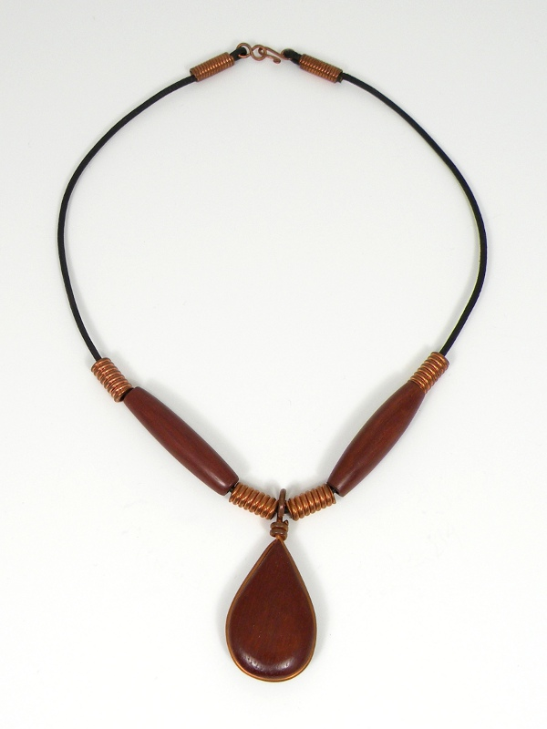

Blood Drop Necklace Blood Drop Necklace
Blood Drop Necklace Blood Drop NecklaceOne of my favorite woods is bloodwood, both for its macabre name and for its rich, crimson hue. I also find that it compliments well that reddest of metals, copper.
Bloodwood is very hard and rather brittle, and can be challenging to shape without splintering. I managed, however, to carve the blood drop shape you see here, largely with the aid of a Dremel. The pendant is held firmly by a piece of copper wire wrapped around the perimeter, terminating in the bail. The bloodwood pipes were also hand-shaped, not turned on a lathe.
In the course of cutting rings for chain jewelry, I discovered that short coils of large diameter wire make attractive beads, thus, the copper beads are actually coils rather than being carved or cast. The latch is hand made as well, from the same copper wire as the keepers which fasten it to the round leather cord.
Created by Sean Corron, April 2, 2011.